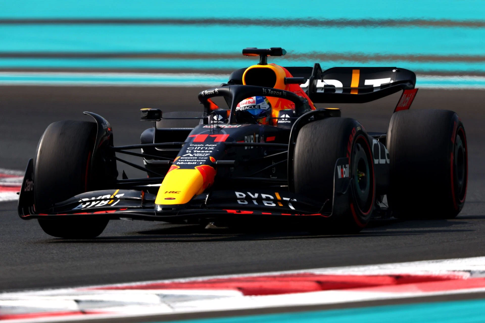
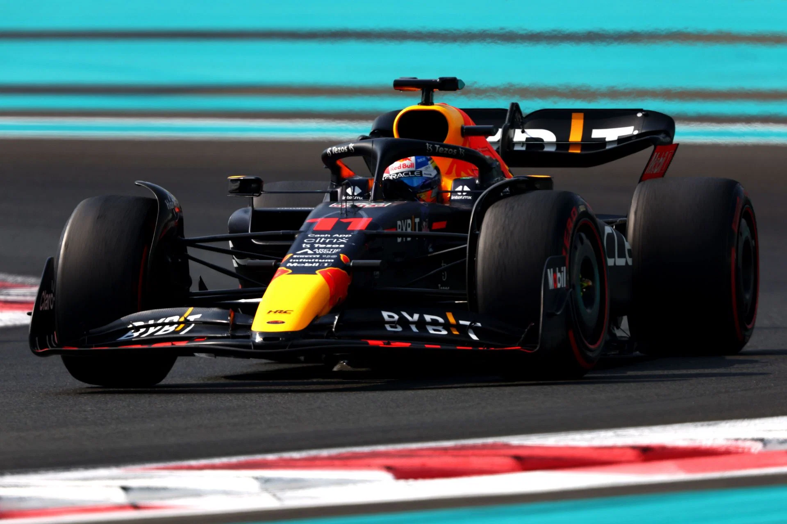

Oracle Red Bull Racing es un equipo de Fórmula 1 dominante que ha ganado 7 campeonatos de constructores y 6 campeonatos de pilotos. Liderado por el talento de Max Verstappen y Sergio Pérez, el equipo se destaca por su tecnología de punta, estrategia impecable y trabajo en equipo. Con el apoyo de Oracle y Honda, Red Bull Racing se perfila como una fuerza a tener en cuenta en la temporada 2024 y en el futuro de la Fórmula 1.
Mercedes-AMG PETRONAS F1 ha sido una fuerza dominante en la F1 moderna, acumulando 8 títulos de constructores y 7 de pilotos entre 2014 y 2021, muchos de ellos con Lewis Hamilton. Liderados por Toto Wolff, combinan tecnología de punta, estrategia y trabajo en equipo. Tras un 2023 con cambios, se reestructuran para volver a la cima con Russell y Hamilton. Su objetivo es claro: ser leyenda de la Fórmula 1.
La Scuderia Ferrari, equipo legendario de la Fórmula 1, ostenta el récord de más campeonatos de constructores (16) y pilotos (15).
Fundada en 1929 por Enzo Ferrari, la Scuderia ha forjado una historia plagada de victorias y emociones.
En la actualidad, el equipo está liderado por Charles Leclerc, joven piloto con un gran potencial, y Carlos Sainz Jr.,
piloto experimentado que aporta regularidad. Aunque la temporada 2023 no les permitió alcanzar el título, la Scuderia
Ferrari ha mostrado una clara mejora y se perfila como un fuerte contendiente para el campeonato 2024.
Su rica tradición, el desarrollo constante de tecnología y la pasión inigualable de su afición convierten a la Scuderia Ferrari
en un equipo único e irrepetible en el mundo de la Fórmula 1.
McLaren, equipo legendario con 12 títulos de constructores y 8 de pilotos, busca recuperar su gloria.
Liderados por Zak Brown, apuestan por la juventud y talento de Lando Norris y Oscar Piastro.
Tras un 2023 con altibajos, se reestructuran para volver a ser protagonistas en la F1.
Su objetivo:
Reescribir su historia en la máxima categoría del automovilismo.


El glamour británico de Aston Martin se fusiona con la potencia alemana de Mercedes en el Aston Martin Aramco Mercedes.
Aunque recién llegado en 2021, ya han logrado 9 podios y buscan dar más guerra. Con Fernando Alonso, veterano bicampeón,
y Lance Stroll, promesa en ascenso, al volante, y el motor Mercedes impulsándolos, tienen talento y potencia.
Tras un 2023 solido, se reestructuran para dar el salto y luchar por victorias.
¿Podrán reescribir su propia historia en la F1?
Solo el tiempo lo dirá.
Alpine Renault, heredero del legado de Renault en la F1, busca reescribir su historia. Con Esteban Ocon, Pierre Gasly y el apoyo de Renault, se consolida como la "mejor del resto". Apuesta por la experiencia, juventud, talento y tecnología para luchar por victorias y campeonatos. Su futuro es ilusionante.
Williams Mercedes, unión de dos históricos de la F1, busca recuperar la gloria.
Alexander Albon y Logan Sargeant, jóvenes talentosos al volante, junto a la potencia de Mercedes, les dan la ambición de volver a ser protagonistas.
Tras un 2023 irregular, se reestructuran y renuevan para competir con los mejores. Su objetivo: volver al podio y ser leyenda.
La juventud, talento, experiencia y tecnología les dan la esperanza de reescribir su historia.
El futuro ilusiona.
El equipo Visa Cash App RB irrumpe en la Fórmula 1 con la ambición de desafiar el status quo.
Nacido de la reestructuración de AlphaTauri, este nuevo equipo se beneficia de la experiencia y el conocimiento de Red Bull,
combinándolo con una filosofía fresca e innovadora.
Al frente del equipo se encuentra Franz Tost, un veterano de la F1 con un historial de éxito.
Yuki Tsunoda y Daniel Ricciardo, dos pilotos con talento y personalidades vibrantes, conforman la dupla al volante.
El equipo también cuenta con el apoyo de Honda, uno de los fabricantes de motores más reconocidos de la categoría.

El Stake F1 Team Kick Sauber, un equipo nuevo en la parrilla de Fórmula 1, irrumpe en la escena con la ambición de dejar huella.
Nacido de la asociación entre Sauber Motorsport, con su rica historia en la competición, y Stake, una empresa innovadora,
este equipo busca hacerse un nombre en la máxima categoría del automovilismo.
Con Valtteri Bottas, experimentado piloto finlandés, y Guanyu Zhou, joven promesa china, al volante, el Stake F1 Team Kick Sauber
tiene una dupla capaz de sorprender. Además, la escudería cuenta con el apoyo de Alfa Romeo, proveedor de motores y socio técnico.
El MoneyGram Haas F1 Team es un equipo estadounidense que se unió a la parrilla de Fórmula 1 en 2016. Fundado por Gene Haas,
un empresario apasionado por el automovilismo, los corredores Kevin Magnussem y Nico Hulkenberg buscan establecerse como competidorres
consistentes en la máxima categoría del automovilismo.
En su corta historia, Haas F1 Team ha experimentado altibajos. Han logrado algunos resultados notables, como el quinto lugar en el
Campeonato de Constructores de 2018, pero también han enfrentado dificultades como la falta de experiencia y recursos en comparación
con equipos más establecidos.